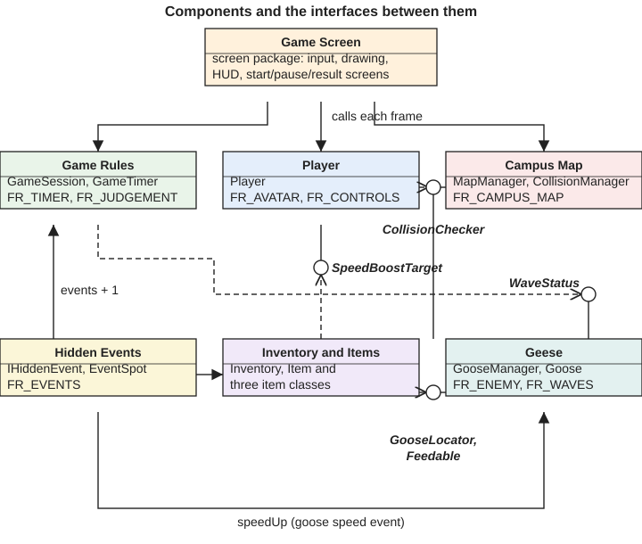
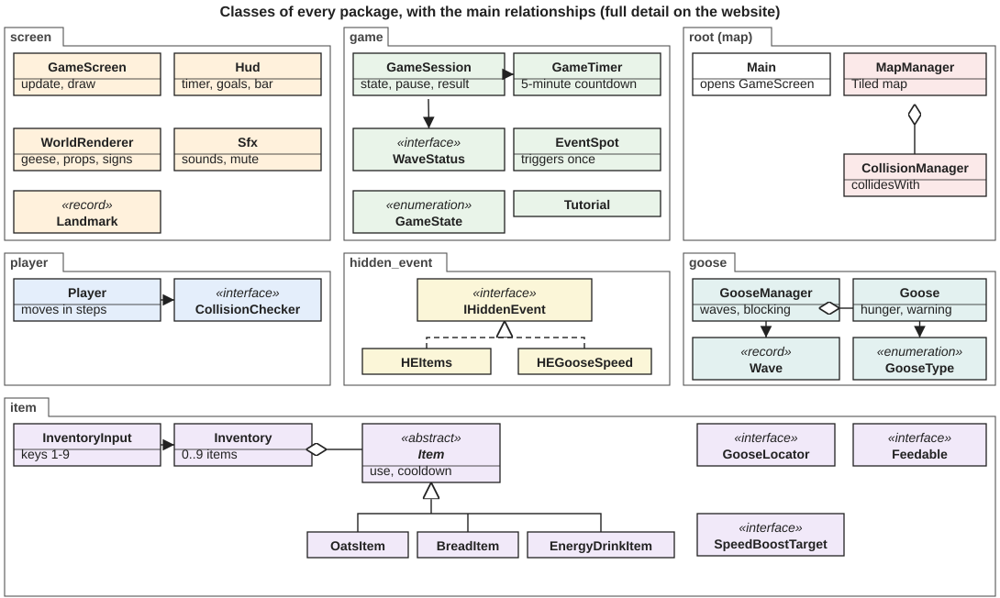
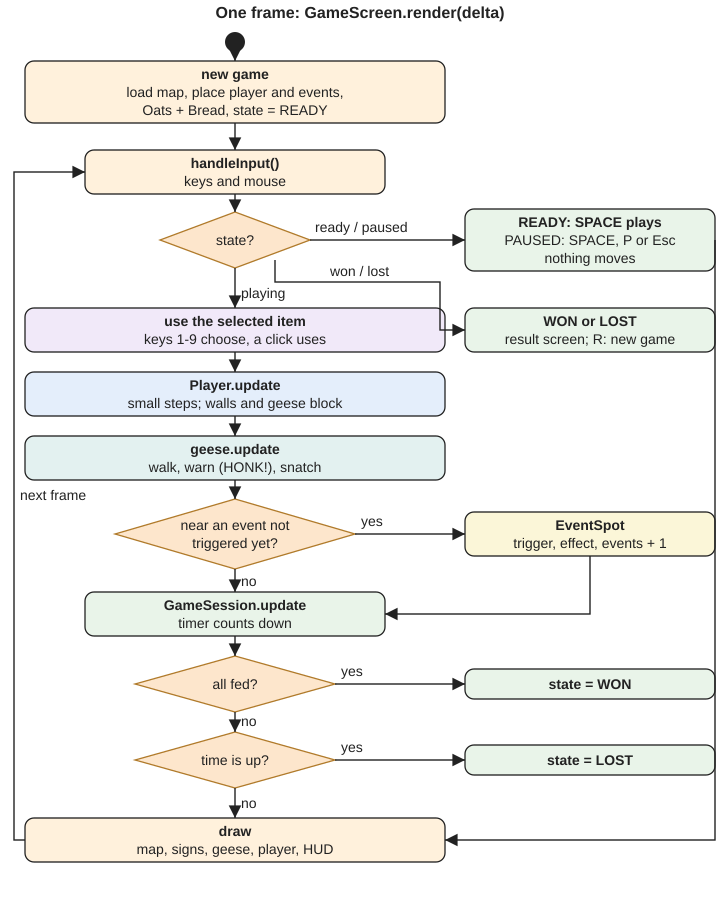
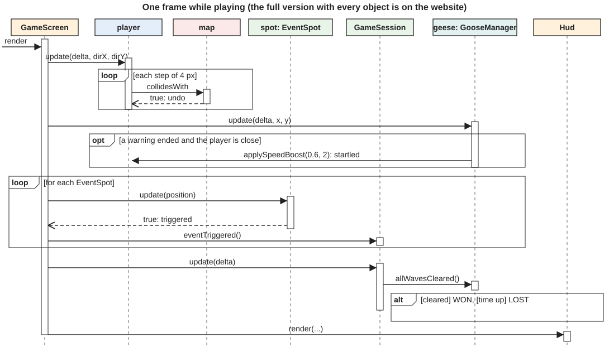

Architecture (Arch1)
Team 2 – Goose Patrol
University of York
Team members
Ghalia Al-Raeissi · Ahmet Baykoz · Alex Dyer · Angelina Kan
Aybike Pembecicek · Leo Plaskett · Sean Tavener · Kevin Yu
All diagrams use UML 2: a component diagram for the abstract structure, a class diagram for the concrete structure, an activity diagram for the abstract behaviour and a sequence diagram for the concrete behaviour. We draw them as code: Python scripts (docs/architecture/source/) write each diagram as SVG, and the report is printed from HTML with Chrome. We chose this over a drawing tool because every version is a text file in Git next to the code, so a design change shows up in the same pull requests as the code, and any earlier version can be rebuilt. The figures below are drawn for print and keep only the main elements; the full-detail versions, the CRC cards and every interim version are on the website at https://e26180.github.io/ENG1-GoosePatrol-TeamN/architecture.html.
The game is split into components that match the areas of the code (the screen, game, player, item, goose and hidden_event packages; the map classes sit in the root package). The Game Screen is the only component that knows all the others. Every other link goes through a small interface (a ball in Figure 1), so each part can be written and unit tested on its own.


GooseManager implements GooseLocator, WaveStatus and CollisionChecker; Goose implements Feedable; Player implements SpeedBoostTarget; EventSpot uses IHiddenEvent; GameScreen holds one of each main object. Attributes, operations and every association are in the full class diagram on the website.libGDX calls GameScreen.render(delta) about 60 times a second; Figure 3 shows one call. Every game timer runs on delta, not the clock, so a paused game skips the update steps and the timer, cooldowns, boosts, messages and goose speed-up all stop together (FR_PAUSE_KEY); only Sfx reads the clock, to space out repeated sounds.


a6. Responsibilities. The CRC cards for the ten main classes are on the architecture page of the website, next to the diagrams.
GooseLocator, Feedable and SpeedBoostTarget; the player only knows CollisionChecker; the rules only know WaveStatus. This let several developers work in parallel: the items were finished and tested before any goose existed, and the game screen was built and played with a stand-in for the geese, which the real goose package replaced by changing one line.GameSession, GameTimer, Player, EventSpot, the geese and the items contain no drawing or input code; GameScreen, WorldRenderer, Hud and Sfx do that. So the rules can be unit tested without a window (118 JUnit tests), including whole simulated games, which supports QR_STABLE and UR_MAINTENANCE.GooseManager tells a GooseListener when a wave starts, a goose warns, a snatch lands or a wave is fed; the screen turns these into sounds and messages. The goose package therefore knows nothing about audio or the HUD.delta. Using libGDX’s render(delta) with a fixed order of steps (Figure 3) makes pause trivial and correct, and it means behaviour does not depend on the frame rate. Movement is split into steps of at most 4 px so a slow frame cannot carry the player through a thin wall (QR_COLLISION).EventSpot pairs an IHiddenEvent (where it is, when it triggers) with an effect, so event classes do not need references to the inventory or the geese.| Requirement (Req1) | Component and classes | Tests |
|---|---|---|
| FR_AVATAR, FR_CONTROLS | Player: Player; Game Screen; InventoryInput | PlayerTest (walksAtBaseSpeed, diagonalIsNotFaster); numberKeysMapToSlotNumbers |
| QR_COLLISION, QR_OUT_OF_BOUNDS | Player and Campus Map: Player, CollisionManager | PlayerTest (stopsAtAWallEvenAfterASlowFrame, walkingOutOfAGooseNeverGoesThroughAWall, cannotLeaveTheMap) |
| FR_START_PAUSED, FR_PAUSE_KEY | Game Rules: GameSession, GameTimer | GameSessionTest (startsOnTheStartScreen…, pauseStopsTheTimer…) |
| FR_TIMER, FR_JUDGEMENT, UR_RESULT | Game Rules: GameTimer, GameSession; Hud | GameTimerTest; GameSessionTest (losesWhen…, winsEarlyWhen…) |
| FR_COUNTERS | Inventory.getItemsUsed(), GameSession.getEventsTriggered(); Hud | usingTheSelectedItemSpendsOneUseAndCountsIt, countsEvents |
| FR_START_INVENTORY, FR_SINGLE_TARGET, FR_MULTI_TARGET | Inventory and Items: OatsItem, BreadItem | oatsFillHalfOfTheClickedGoosesHunger, breadFeedsEveryGooseInTheRadius… |
| FR_EVENTS, FR_EVENT_EFFECT | Hidden Events: EventSpot, HEItems, HEGooseSpeed | EventSpotTest; aHiddenEventCanGiveTenMoreBread |
| FR_ENEMY, FR_WAVES, FR_WAVE_COMPLETE, QR_PROGRESSION | Geese: Goose, GooseManager, Wave | GooseTest; GooseManagerTest (feedingAWaveStartsTheNext…, nextWaveComesAfterTheCountdown…) |
| QR_ALERT, UR_NONVIOLENT | Goose warning state; WorldRenderer, Sfx | snatchLandsOnlyAfterTheFullWarning, aSnatchStartlesThePlayerWithAWarningFirst |
| UR_NO_EXPERIENCE, UR_THEME | Tutorial (tips at the right moment); Landmark (Campus East signs) | TutorialTest |
| QR_WINNABLE, QR_NEWBIE, QR_AVOID_EXTREME | Constants in the items and GooseManager (startle 40%, bread 60 px and at most 10 geese) | WinnableGameTest; startingFoodIsEnough…; breadFeedsAtMostTenGeeseAtOnce |
| Version | What changed and why |
|---|---|
| v1 (team draft) | First component and activity diagrams, drawn from the product brief. |
| v2 | Checked against Req1: player health removed (the game has no violence, UR_NONVIOLENT); pause and a start screen added (UR_PAUSE); a Counter System added (FR_COUNTERS); notification events replaced by hidden events found by walking (FR_EVENTS); collectibles and score moved to Assessment 2. |
| Item subsystem | The first package to be built. The items were made to depend on Feedable, GooseLocator and SpeedBoostTarget rather than on goose and player classes, and Oats’ use() was changed to spend nothing when a click hits no goose (Bread, an area item, is spent wherever it lands). This set the pattern used by the rest of the design. |
| v3 (final) | Matched to the code. The Game Manager was split into GameSession (rules, testable) and GameScreen (input and drawing), because rules mixed with drawing could not be unit tested. The separate Counter System was dropped: the counts live where the actions happen (Inventory, GameSession), which removed a component that only forwarded calls. WaveStatus and CollisionChecker were added so the rules and the player do not depend on the geese or the map classes. Event effects moved into EventSpot, and timed effects count down with delta so they stop during a pause. Player Control became GameScreen.handleInput() plus InventoryInput. The geese were built last against these interfaces. Simulated whole games (WinnableGameTest) then showed that a player could run out of food, so the bread area grew from 30 to 60 px and the oats from 10 to 15 uses. A code review then found that walls and geese needed different collision rules and that Bread needed a 10-goose limit; items and event spots now describe their own icons and props, so new ones need no change to the screen (QR_EXTENSIBLE). |
New items (UR_MAP_ITEMS) are one new Item subclass with no change to Inventory; new hidden events are one new IHiddenEvent class plus an EventSpot; goose types with different stats (FR_GOOSE_VAR, FR_BOSS) only change the goose package; and a score (FR_SCORE) can be computed from GameSession, GameTimer and Inventory.getItemsUsed(). This is QR_EXTENSIBLE.